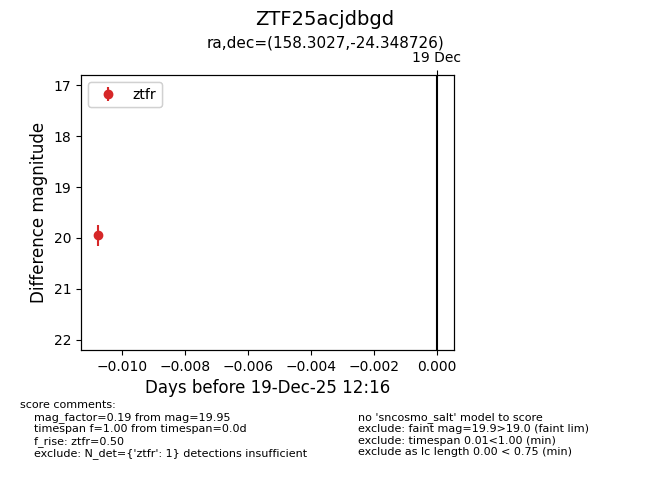
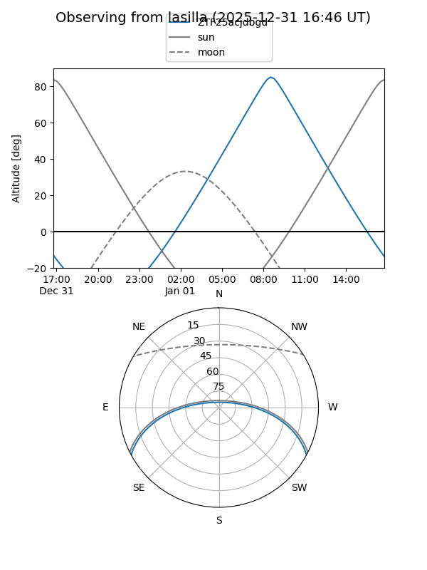
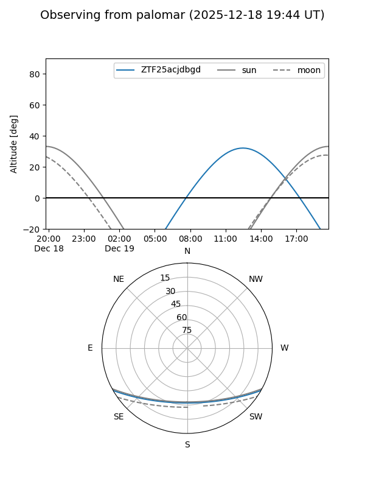

ZTF25acjdbgd
Target ZTF25acjdbgd at 2025-12-31 18:00
Aliases and brokers:
FINK: link
Lasair: link
ALeRCE: link
alt names
ZTF25acjdbgd (ztf,fink_ztf)
Coordinates:
equatorial (ra, dec) = 158.3027,-24.34873
equatorial (HMS+DMS) = 10:33:12.65,-24:20:55.41
galactic (l, b) = (266.8471,+28.67041)
Flags:
Photometry:
last ztfr=19.95
1 ztfr detections
Lightcurve

Visibility


Additional plots